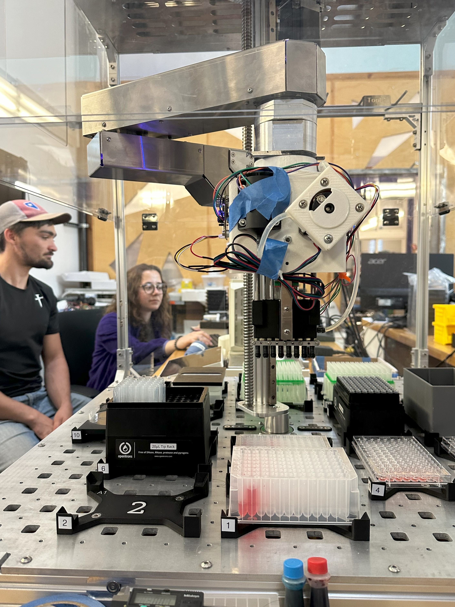
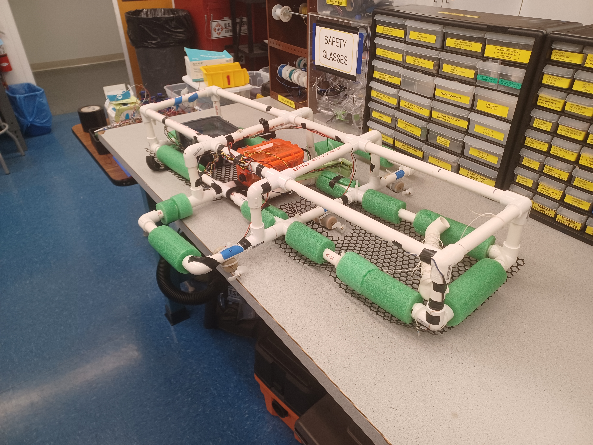
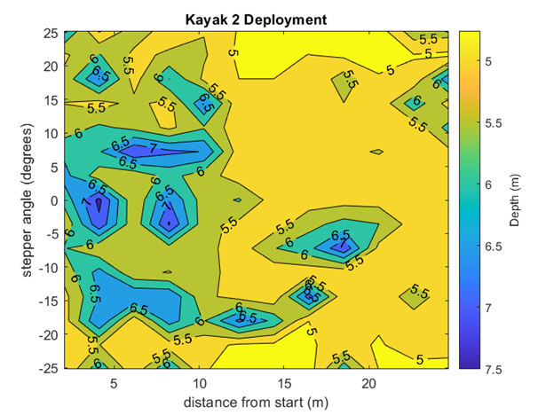

Academic Projects

Introduction
Learn more about the projects I have done throughout my time at Harvey Mudd College. Through these projects, I have gained invaluable experience implementing the Engineering-Design process, rapid prototyping, designing for manufacturing, and writing code in Python and C++.
Zero Z-Force Pipetting
 A picture of me programming controls on site! Last year, I had the privilege of working with an awesome startup called Trilobio as part of Harvey Mudd’s clinic program, a program where teams of 4-6 students work with companies on a wide array of projects. Trilobio is developing a system of robotic lab automation modules in order to facilitate lower cost, automated, and reproducible lab work, learn more about them here.
Trilobio tasked my team with developing methods of reducing z-axis force when picking up pipette tips, as a robot arm could not handle pickup of pipette tips when scaling up the number of pipettes. Our team took on the challenge head-on and not only developed a novel method of picking up pipette tips through hydraulics, but successfully prototyped a system for automatic eight-channel pipette tip pick up, aspiration, dispensing, and disposal using zero z-axis force.
During the project, I implemented a method of hydraulic inflation for tip pick up. I worked on designing and fabricating mechanical fixtures for 3D-printed elastic resin sleeves to create water-tight seals in our prototype. I created test procedures to validate durability and sealing, writing G-code to carry out cycle testing of the hydraulics system.
I also was single-handedly responsible for automating the inflation of the sleeves, designing a custom peristaltic pump system, as well as integrating the entire system with Trilobio’s robot using Python. This integration was done entirely on-site, where I worked quickly under pressure to familiarize myself with Trilobio’s codebase and successfully integrated our system.
LYLE: Location Yielding Littoral Explorer
 A picture of our final robot build. All spring semester sophomore engineers at Harvey Mudd undergo a rigorous lab-based class called E80, or Experimental Engineering. In the latter half of this class, students work in teams of four to five students to develop a fully autonomous underwater robot that measures a phenomenon of their choice with a limit of $50 to purchase sensors. At the end of the class, this robot is deployed at Dana Point Beach, a harbor in the suburbs of Los Angeles.
My team chose to measure ocean depth using a side-sweeping sonar system composed of a speaker, microphone, and a stepper motor. We carefully weighed tradeoffs to choose the most optimal combination of sensors to stay under our budget. In order to make up for limits in the equipment, we designed circuitry to perform pulse generation and audio amplification on the speaker as well as pulse detection on the microphone.
I designed the depth measurement process using C++ on a Teensy 4.0 microcontroller. First, LYLE’s speaker sends a pulse signal. Then, a microphone detection cycle initiates and senses for a return signal. Finally, the stepper moves 3.6 degrees in the negative or positive direction. This cycle continues at one location until a full sweep of data is collected (-36 to 36 degrees). The robot then moves autonomously to a new location and the depth measurement process repeats. Throughout this process, microphone output, stepper position, and GPS data are all logged to an SD card.
 In this map, the shore is to the right and deeper waters to the left, note how depth decreases as you approach the shore!
I integrated all of the sensors and mechanical components into a cohesive system performing this process. I wrote well-documented object-oriented code to program sensor controls as well as data collection mechanisms. I wrote custom data logging procedures to handle the rapid and large collection of data during pulse detection. By isolating the time of arrival of a pulse, I was able to calculate approximate depth around the robot and generate topographical maps in MATLAB. On the right is an example from our deployment at Dana Point Beach.
For this project, my team won the J.R. Phillips Award for outstanding experimental technique and engineering judgment. We were chosen for this award over all other sophomore engineering teams (roughly 30 other teams).